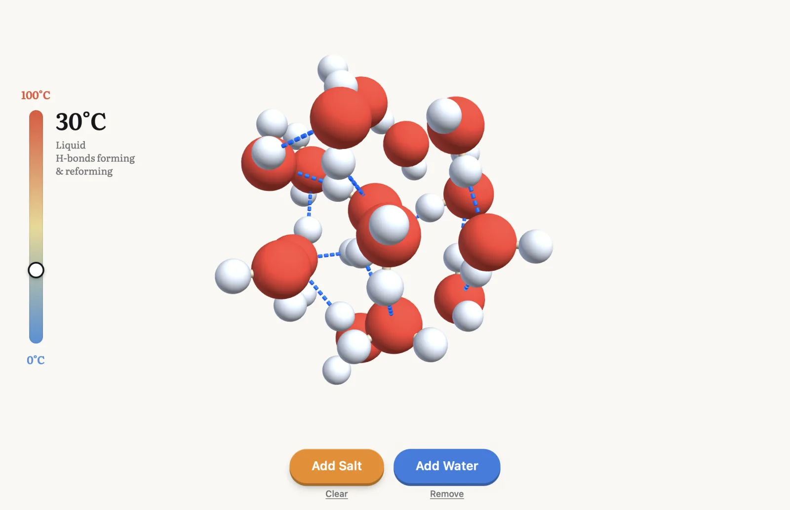
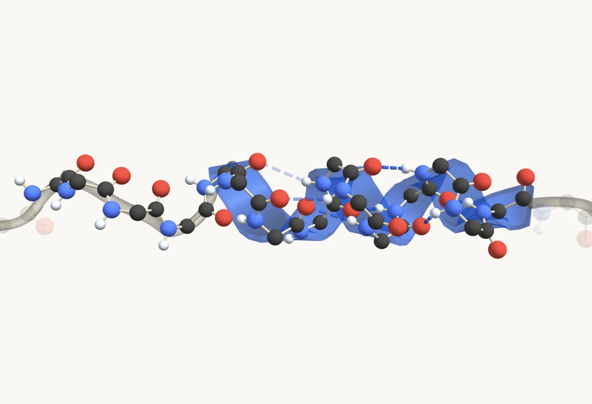
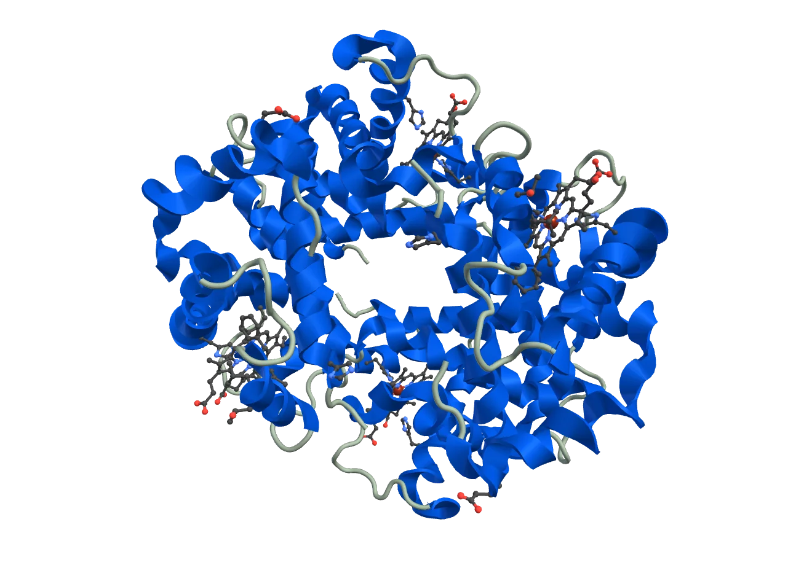

Kodolab
A web platform for learning biology in 3D. A built-in AI sandbox enables students and teachers to generate lessons of their own, with seconds between iterations. A library of components ensures scientific accuracy and detail that general AI agents can't achieve alone.